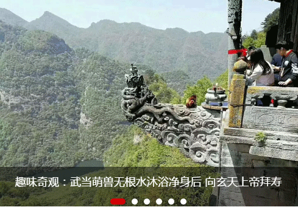

第十一届海峡两岸（厦门海沧）保生慈济文化旅游节开幕

- 广东省民族宗教委学习考察团到上海城隍庙参访
- 爱心企业向上海白云观慈爱功德会（筹）捐赠爱心物资
- 法国旅行团到武汉长春进行为期四天的寻道之旅
- 上海白云观功德会（筹）公益国学课程相继开班
- 黄信阳赴伊朗进行三天访问交流 圆满结束顺利返京
- 厦门市真武观真武祖师神像开光活动举行
- 安徽省委常委，统战站部长刘莉到省道教协会走访调研
- 美国道教协会至厚会长率弟子来真庆观交流参学
- 三官道院举行“关于道教心性有关问题的探讨”讲座
- 广东省民委副主任杨正根一行到苏州玄妙观考察副主任